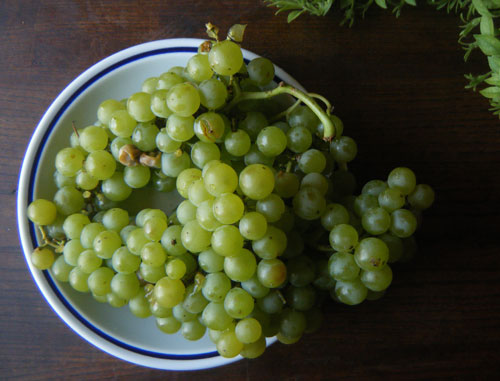
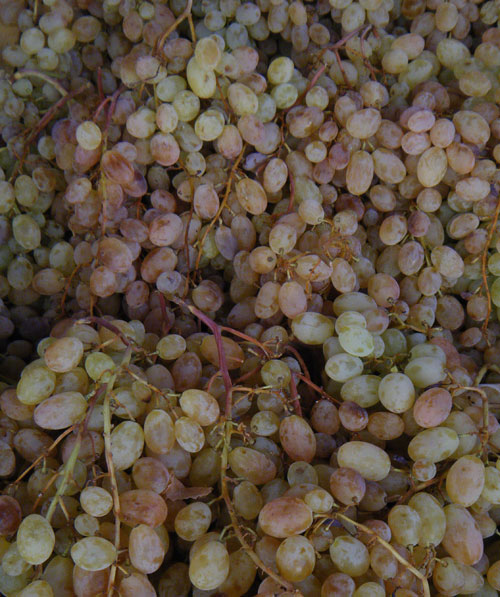
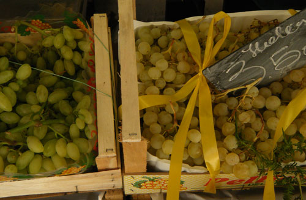

Best in Rome: Grapes

Small and sweet Muscato Grapes before I ate them all.
Autumn usually proves a difficult season for me. I dislike getting into jeans, closing the windows, or drinking hot tea instead of cool white wine. But there’s always a consolation with the changing of the seasons: Mauro’s rotating variety of fruits and vegetables. The green beans are giving way to mushrooms and brocoletti, while the stone fruits are slowly making room in the spotlight for the grapes. Unlike the very limited selection I’ve ever encountered in the States, at Mauro’s fruit stand the bunches vary in color, size, and shape.
And also unlike grapes in the States, these have seeds! A difference I had forgotten about until my family visited a few weeks ago and my brother almost spit his mouthful out, disgusted. Seedless grapes creep me out as I love the contrast of the bitter crunchy seed with the smooth and sweet grape flesh.

Regina di Bari. Who said white grapes were white?
Regina di Bari: Hailing from Bari, these grapes are golden on the outside and sweet on the inside.
Pizzutella: These grapes are long in shape and always refreshing and crisp. The variety comes in both nera (black) and bianca (white). I like to eat these early in September when it’s still hot.
Baresana: Also from Bari. Small, translucent, and sweet, the baresana are good after dinner.
Italia: This is as normal as it gets for grapes in Italy. So normal that they just named them after the country. These are the round white or black variety that are sold even in supermarkets. Although Mauro’s taste nothing like store-bought ones.
Muscato: Tannic little grapes that grow close in a cluster. I tried these a few weeks ago from the fruit sellers who are Mauro’s competition, and they were perhaps the best grapes I’ve had all year. Two thumbs up!
Fragola: In the States these are called Concord Grapes, but here they are called “strawberry.” I first tried them in Italy and thought they could only be found here. Their wide availability doesn’t take away their tasty glory. The super-sweet, red-fleshed grapes are addictive.

Pizzutella next to Baresana at Mauro’s fruit stand near the Colosseum yesterday morning.
· · · · · · · · · · · · · · · · · · · ·